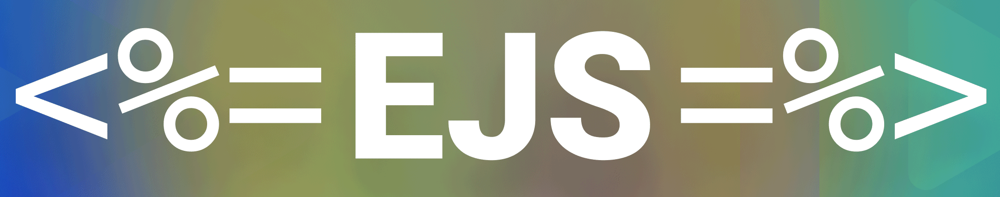
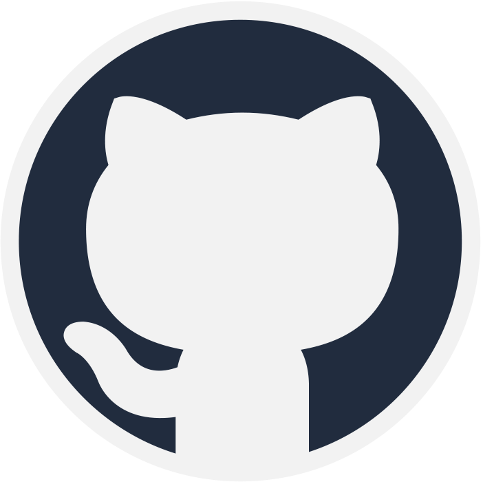
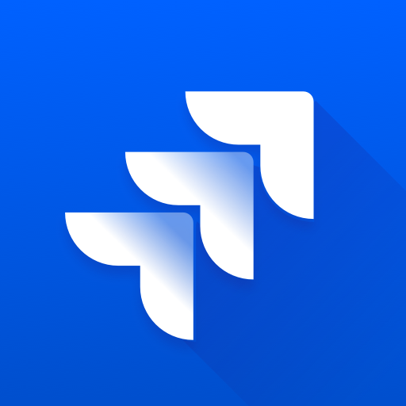
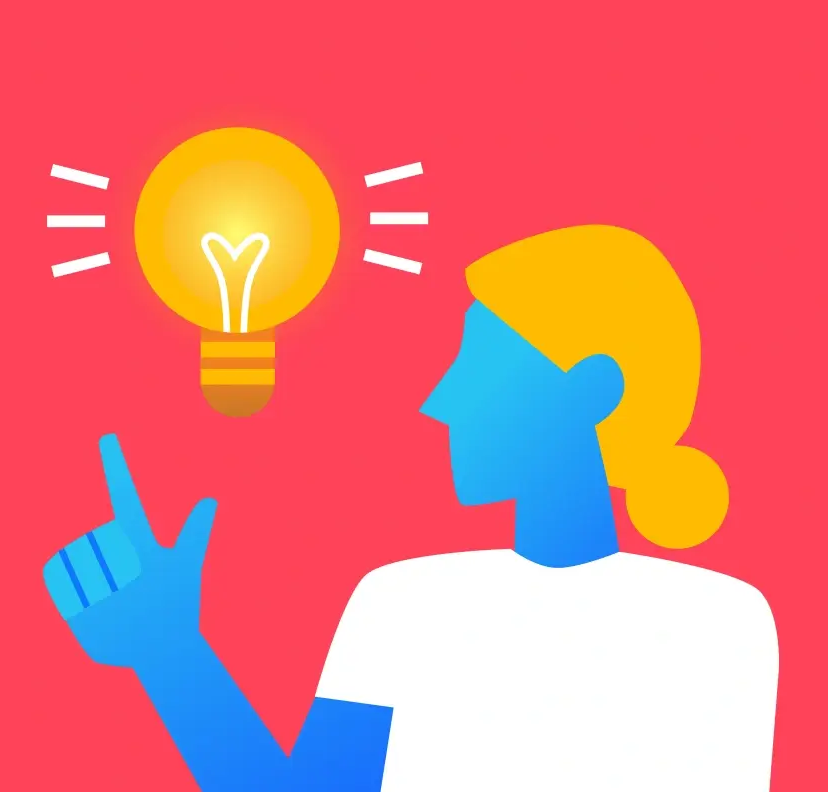
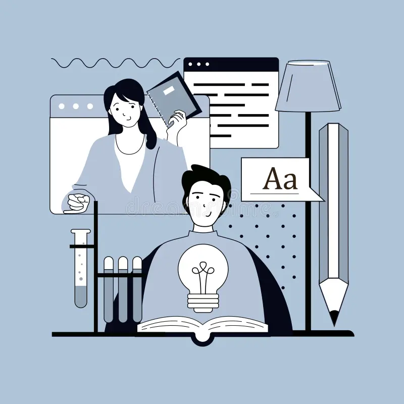
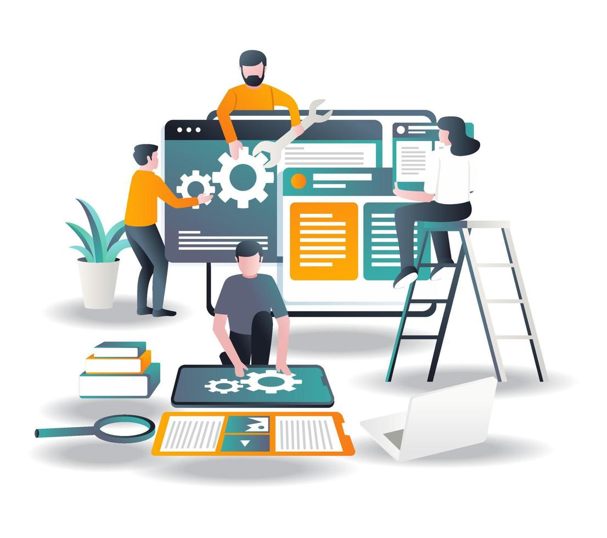

Work Term 3

TygerShark Inc
Tyger Shark Inc is a small startup tech company that primarily works in the software development industry. They have many well-known clients that they work with, including Universal Pictures, the Toronto Maple Leafs, and the Toronto Raptors. Tyger Shark has also sold multiple startup brands and products built from the ground-up. Only a few months prior to my term, Tyger Shark underwent a large buyout of their biggest platform called Ghost Retail.As mentioned, Tyger Shark is a very small company – Only around 13 employees! In particular, the development team I worked with only consisted of two other people that had been with the company for over a decade. With this small size came a lot of meaningful-feeling work. One of my favourite parts about working here was being able to directly see each and every contribution I made to the projects we worked on. However, also resulting from a small team is an increased amount of responsibility and pressure on my work. It was certainly a very fast-paced work environment with no shortage of challenge or learning opportunities.
| React + Typescript Frontend Development |
|---|
|
My primary role at Tyger Shark was frontend development in Typescript with React. This was an awesome opportunity since
I had never worked with React before, and it's a very popular framework that's widely used. Throughout my term I worked
on many substantial components for one of Tyger Shark's primary web applications called VidVisor. VidVisor is an
interactive video platform that is used by companies to upload their videos, add interactive elements to them, and embed
them into their own company websites.
|
| Node.js Backend Development |
|
During my time at Tyger Shark I also got to work on implementing some backend functionality to the VidVisor Node.js
server. As part of the server stack, we used MongoDB for the platform's database. MongoDB is an extremely intuitive
NoSQL database technology that stores data in a JSON format, which integrates very seamlessly with a Node.js backend.
 templates, I used flexboxes and grids for the first time! These are amazing additions to my html/css toolkit that I plan to use quite often in the future. |
| Code Reviews + Task Coordination |
|
The third major portion of my work at Tyger Shark was all about collaborating with my fellow developers on the team.
Including myself, we had a development team of just 3 people.
 In our daily development cycle, GitHub was at the heart. Each task we tackled was done on its own branch of the VidVisor repository. Then, once a task is completed, it gets submitted to be reviewed by the other 2 developers, and then merged into the main branch. This made for a very natural flow that I liked a lot. The fact that my coworkers were going to be reviewing and testing everything I wrote encouraged me to really consider what I was writing every step of the way. I think this helped make me a much better and more mindful developer, helping me work beyond just making the code work.  The other major component of our project coordination was Jira. Jira was central to helping us developers coordinate on what was being done, what needed to be done, and what was completed. Each time a new task was brought up, it would first go to Jira, where it would then be picked up by one of us as our next task to tackle. What made this so seamless was that Jira was able to connect directly to our github repository, which allowed each task's github branch to be linked to its Jira ticket. This Jira board was also very helpful in our standup meetings that we attended every other day to check in and discuss how things were going with each of our tasks.GitHub and Jira together made for a very communication-focused environment that made the team feel like a team, rather than a group of individuals. It was great to get a software engineering team experience as good as this one. |
| Goal #1 - Problem Solving |
|---|
|
This goal is a continuation of a previous one to do with self-sufficiency in my role:  increasingly comfortable with pursuing my own solutions and sharing what I came up with to my fellow developers. The other developers on my team were extremely helpful in achieving this goal as well. They were very eager to leave me with complete control over the tasks I was given. I think I did a good job being reliable which enabled my coworkers to trust me with tasks and additions that were fairly major additions to the application. It felt really nice to be trusted in this way. Another aspect that helped me feel free to come up with my own solutions was our quality-control system that was in place in the form of code-reviews. Nothing that was added was published without the approval of everyone on the team. This added an extra layer of safety to what I worked on, which also contributed to my comfort to craft my own solutions. |
| Goal #2 - Depth & Breadth of Understanding |
|
This goal is all about maximizing my learning:  I think this goal went very well. Throughout the term I was constantly introduced to new concepts because each thing I tackled was unique. As time went on and I became more comfortable with the basics of React, I no longer felt the need to copy from existing code everywhere I went. By the end, I was able to come up with my own unique solutions to the majority of my tasks. Again, my success with this goal was aided by my supervisor making an active effort to allow me to tackle these different challenges. Whenever new tasks arose, he made an effort to encourage me to try them, even if they were new to me. It was his trust and confidence in me that allowed me to feel comfortable trying new things as I programmed. I believe that I am coming out of this work term with great confidence that I will be able to apply a great deal of what I learned to my future endeavours. |
| Goal #3 - Industry Experience |
|
My final goal is especially important for this term since it is my first true role in software development:  I tried to contribute ideas and thoughts. However, thanks to encouragement from my coworkers and boss, I learned to be a lot more confident in expressing my ideas, and made numerous real contributions to the discussions that followed. Additionally, the process of submitting my code to be reviewed by my fellow developers was another very central aspect of software development that I learned a lot about. When reviewing others' code, I learned that it's important to not only make sure the addition works, but to also look at the quality of the code that is written. The way we tackled projects was by splitting them into clear, distinct pieces that were each labelled as their own individual task. This was another great learning experience to learn how large projects could be tackled by a team of developers without everybody working on the same things and overlapping each other's work. |
|
I believe that this term was a pivotal moment for the start of my career. Software development is the direction I currently hope to take my career in, and this was my first real software development position. I not only got to learn a multitude of new current technologies, but I also gained extremely valuable experience of how it is to work alongside a team of developers professionally. The experience I gained, both technical and collaborative, will be central to how I plan to carry myself into my future work terms and beyond. I am incredibly grateful for the growth opportunities I was given this term and have nothing but positive things to say! |
 I worked with MongoDB many times throughout the term, adding pieces of data to existing objects like user accounts and
videos. Among these data additions were the video's closed caption data. I also worked with MongoDB in the form of
query-writing. After we finished implementing closed captions, our next project was creating weekly and monthly report
emails to share video metrics with users. A large part of this was creating daily aggregations of video data so that the
reports could be summed up more efficiently. I did not write the initial queries for the aggregations, but I was the
primary debugger after the first iteration of them was written. I debugged and refactored quite a few of them, giving me
good MongoDB query experience.
I worked with MongoDB many times throughout the term, adding pieces of data to existing objects like user accounts and
videos. Among these data additions were the video's closed caption data. I also worked with MongoDB in the form of
query-writing. After we finished implementing closed captions, our next project was creating weekly and monthly report
emails to share video metrics with users. A large part of this was creating daily aggregations of video data so that the
reports could be summed up more efficiently. I did not write the initial queries for the aggregations, but I was the
primary debugger after the first iteration of them was written. I debugged and refactored quite a few of them, giving me
good MongoDB query experience.